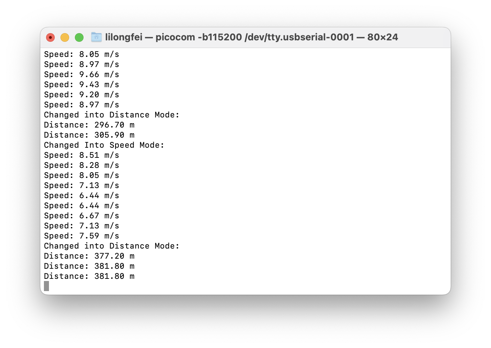

实验3指南¶
本实验指南尚未发布，内容随时可能发生变化
请跟随实验指南完成实验，完成文档中所有的`TASK`。`BONUS`部分的内容完成可作为加分，但报告的总分不应超过100分。请下载此指南作为实验报告模版，将填充完成的实验报告导出为PDF格式，并命名为“学号_姓名_lab3.pdf”，上传至学在浙大平台。下载请点击 **[这里](../download.md)** 。
## 1 硬件连线
请参考 Lab1 中的按钮连接方法，通过面包板在PA11和PA12（若引脚有别的外设占用，可自行更改引脚）各连接一个按钮开关到地。并参考之前的连线完成103板和CP2102以及ST-Link的连接。
`TASK1` ==请拍摄你所连接的实物图==（5分）
`TASK2` ==请画出完整的连线示意图，包括103板、ST-Link、开关以及串口，要求标记清楚需要连线的引脚==（5分）
## 2 外部中断EXTI
可以配置在GPIO的电平发生某种特定变化（上升沿/下降沿等）时触发中断，从而使得103板能够及时响应外部设备的变化。
STM32的GPIO中断/外部中断EXTI同时支持配置中断优先级以及中断嵌套。
关于使用HAL库配置GPIO中断/外部中断EXTI的具体方法，请参考以下链接：
!!! tip "参考资料"
[STM32的HAL库开发系列 - GPIO中断/外部中断EXTI](https://developer.aliyun.com/article/1141153)
## 3 按键中断点灯
在 lab1 中，我们已经实现了用轮询的方式，在主循环中实现通过按钮控制LED灯的亮灭。
在本实验中，我们需要通过按键外部中断的方式来控制LED灯的亮灭。要求实现每次按下按键后，LED灯切换一次状态（亮变灭，灭变亮）。
请参考之前的按钮配置，但需要注意将引脚配置为中断引脚（`GPIO_EXTIx`），同时配置中断触发方式为下降沿触发。（任意选择其中一个按键即可，另一个按键将在配置码表时使用）
配置完成后，你需要重写中断服务函数 `HAL_GPIO_EXTI_Callback(uint16_t GPIO_Pin)` 。在每次引脚中断发生时，此函数会被调用。你需要实现每次按键中断发生时，LED灯的状态切换一次。本实验仍然要求实现按键去抖。
!!! tip "参考资料"
[STM32外部中断模式控制LED灯亮灭](https://blog.csdn.net/qq_55894922/article/details/127416027)
注意，上述参考资料所使用的开发环境不完全相同，也存在一些小错误。请注意参考。
`TASK3` ==请给出配置ioc文件中中断引脚的几个关键配置的截图==（5分）
`TASK4` ==编写前后台程序，将去抖等操作放置在主循环中，在中断服务函数中使用尽量少的操作，完成LED灯状态的切换。请在此处给出 `while(1)` 以及 `HAL_GPIO_EXTI_Callback()` 中的代码。==（5分）
`TASK5` ==编写中断驱动模式程序，在中断服务函数中完成LED灯状态的切换（包括去抖操作），主循环中不进行任何操作。请在此处给出 `HAL_GPIO_EXTI_Callback()` 中的代码。==（5分）
`TASK6` ==在以上程序的基础上，实现每次切换LED灯状态时，在串口输出相应的信息。请在此处给出实现的代码以及串口输出的信息截图。==（5分）
`TASK7` ==思考：若在中断函数中使用轮询的方式向串口发送信息，或者在中断函数中使用延时进行去抖操作，会有什么潜在问题？==（5分）
`TASK8` ==在TASK3中，你能够在中断服务函数中正常使用`HAL_Delay()`函数吗？如果不能，你的解决方法是什么？==（5分）
!!! tip "提示"
在ioc文件配置中的 System Core -> NVIC Settings 中，可以配置中断优先级，其中，数字越小，优先级越高。在中断服务函数中，可以通过 `HAL_NVIC_GetPriority()` 函数获取中断优先级，通过 `HAL_NVIC_SetPriority()` 函数设置中断优先级。
在进行中断嵌套时，中断优先级的设置会影响中断的响应。
## 4 码表
本实验中需要实现一个简单的自行车码表，用于测量自行车行驶的里程和速度。我们可以通过测量轮胎转过的圈数来计算里程，通过测量轮胎转过的圈数和时间来计算速度。
在本实验中，将测量轮胎转过的圈数的霍尔元件简化为了一个按钮，每按下此按钮，即代表轮胎转过一圈。另一个按钮则负责切换显示模式（里程/速度）。自行车轮胎的周长可自己定义，合理即可。
所测量的里程/速度需要通过串口输出，要求每秒输出一次。所显示的里程为总里程，速度为近似的当前瞬时速度。
`TASK9` ==应当如何设计速度的计算方式，使得在选择为速度模式时，每秒输出的速度接近当时的瞬时速度？==（5分）
!!! tip "提示"
可以近似的认为自行车的速度变化曲线是较为均匀平滑的。不必采用过于复杂的计算方法。
在此实验中，你可能会需要定义一些全局变量，用于记录距离、状态、中断标识等信息。
### 4.1 前后台程序的码表
编写前后台程序，以中断处理时钟定时器和其中一个按钮（模拟钢圈计数），以主循环读取按钮的变化值并根据定时的值做输出，第二个按钮（模拟模式切换）由主程序轮询判断，用以改变输出的数据（速度还是里程）。程序通过串口输出；
`TASK10` ==请在下方给出主循环中的代码，并附上较为详细的注释。主循环应当处理绝大部分内容。==（10分）
`TASK11` ==请在下方给出定时器中断函数中的代码，并附上较为详细的注释。其中应尽量处理较少的事务。==（5分）
`TASK12` ==请在下方给出模拟钢圈的按键中断函数中的代码，并附上较为详细的注释。其中应尽量处理较少的事务。==（5分）
`TASK13` ==以上三个任务中，均强调在中断函数中做较少的内容，而在主循环中处理更多的任务，这样有什么好处？==（5分）
### 4.2 中断驱动模式的码表
编写中断驱动模式程序，以中断处理时钟定时器和两个按钮（模拟钢圈计数以及模拟模式切换），主程序循环中不做事情。
`TASK14` ==请在下方给出定时器中断函数中的代码，并附上较为详细的注释。==（5分）
`TASK15` ==请在下方给出模拟钢圈的按键中断函数中的代码，并附上较为详细的注释。==（10分）
`TASK16` ==请在下方给出模拟模式切换的按键中断函数中的代码，并附上较为详细的注释。==（10分）
`TASK17` ==请在程序运行后尝试两个按钮的功能，并给出串口输出的截图，如下图所示（请替换为你自己的截图）==（5分）

## 5 拓展内容
### 5.1 定时器的外部触发
尝试使用外部触发的方式进行计时，并实现4中码表的功能。
`BONUS1` ==请在下方给出实现定时器外部触发的关键代码，并附上较为详细的注释。==（5分bonus）
### 5.2 动态队列
请尝试使用动态队列模式编写程序，要求在中断响应程序中将对应的函数指针加入动态队列，主函数通过遍历队列来依次执行。
`BONUS2` ==请在下方给出实现动态队列的关键代码，并附上较为详细的注释。如果你已经了解过RTOS，可以讲一讲这种模式和RTOS调度的类似点==（10分bonus）
个人水平有限，如您发现文档中的疏漏欢迎 Issue！